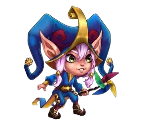

How to Beat Aidan

Aidan Counters:
- Morrigan: is a perfect counter for Aidan, as she blocks his resurrection ability, especially with Kayla. Additionally, each time Aidan attempts a resurrection, Morrigan gains soul essence, which helps fuel her abilities, giving her an edge in battle.
- Oya: Oya pulls enemies with the lowest health to the front line. Even if Aidan isn’t the first target, he might be the next one, thus preventing him from healing his allies.
How to Beat Alvanor

Alvanor Counters:
- Cornelius: Cornelius's first ability deals high physical damage proportional to the intelligence of enemies, causing significant damage to Alvanor.
- Celeste: Celeste can block Alvanor's healing, but her fourth ability will be weakened against Alvanor's fourth ability.
- Phobos: Phobos attacks enemies with the highest magical attack, dealing substantial damage and transferring Alvanor's energy to Phobos.
- Rufus: Rufus is immortal against magical damage, protecting himself and his allies from Alvanor.
How to Beat Amira

Amira Counters:
- Cornelius: Cornelius targets heroes with high intelligence like Amira and can eliminate her with a single blow.
- Sebastian: Sebastian provides pure damage through critical hits, even when Amira blocks critical hits, pairing him with heroes like Keira or Daredevil maximizes damage.
- Lilith: Amira can only reduce 5% of Lilith’s maximum health instead of 50% because Lilith’s max health stat is higher.
- Xe'Sha: Amira’s magic block is limited to allies with magical damage under 45,299. Xe'Sha’s higher stats allow her to bypass this.
- Phobos: While Amira blocks his damage, Phobos can steal her energy, delaying her ultimate.
- Fafnir, Keira, Cornelius, Corvus, Morrigan, (Way of Eternity): Keira quickly eliminates Amira before she can use her gold mount. Fafnir or Cornelius can provide protection to keep Keira alive.
How to Beat Andvari

Andvari Counters:
- Astrid: Astrid deals significant damage to Andvari and stun by focusing her attacks.
- Satori: When Andvari shields the ally with the lowest armor, that ally gains extra energy and can be eliminated, leaving Andvari with one less ally.
- Lars: Lars pushes Andvari back, causing Andvari's allies to lose their crowd control protection for a period.
- Chabba: Chabba can swallow Andvari if he is positioned as the tank, allowing Karkh to eliminate the unprotected allies.
How to Beat Arachne

Arachne Counters:
- Sebastian: Sebastian’s shield can defend your team from Arachne’s stuns.
- Nebula: Nebula’s Serenity ability can cleanse Arachne’s negative effects.
- Celeste: Celeste can negate Arachne’s 30% lifesteal and also remove harmful effects from allies.
- Julius: Julius’ shield clears Arachne’s debuffs when broken, which could work well here.
- Galahad: Galahad can remove Arachne’s stuns from himself using his charge ability.
How to Beat Artemis

Artemis Counters:
- Amira: Amira’s Fair Trade ability can reduce Artemis's damage, turning critical hits into critical failures and thus causing reduced damage.
- Ziri: Ziri draws Artemis’s attention, absorbing physical damage and reflecting it back.
- Helios: Helios counters physical damage with protective spheres and retaliates whenever a teammate suffers a critical hit.
- Jorgen: Jorgen can block energy gains in Artemis’s team, especially when paired with Cleaver who brings her front-line defenders into reach.
- Phobos: Phobos targets the highest magic attacker, which in most cases will be Artemis in her teams.
Note:
Artemis’s teams can be defeated by shield teams, particularly with the combo of JJI Julius, Judge, and Isaac, along with Amira as the fifth team member.
How to Beat Astaroth

Astaroth Counters:
- Morrigan: Morrigan prevents Astaroth from resurrecting and summons a skeleton in his place when he dies.
- Celeste: Celeste can block the extra health gained from Astaroth's or his resurrected ally's revival.
How to Beat Astrid and Lucas

Astrid Counters:
- Iris: Iris can quickly eliminate Astrid and Lucas with her Inner Fire skill, especially when they’re marked by Tracker’s Marks.
How to Beat Aurora

Aurora Counters:
- Chabba: Chabba can devour Aurora, disrupting her ability to dodge and protect her team with magic shields.
- Corvus: Corvus can place his altar to punish Aurora for her AoE damage and magic shield abilities.
- Rufus: Rufus is invincible against Aurora's magic damage, thanks to his passive ability that allows him to survive any fatal magic attacks. As Aurora skills deals magic damage, she lacks the power to defeat Rufus effectively.
How to Beat Cascade

Cascade Counters:
- Corvus: When Cascade charges into the middle of the enemy team, she deals area damage, and Corvus's Altar redirects all the damage to Cascade.
How to Beat Celeste

Celeste Counters:
- Cornelius: Cornelius can take out Celeste in one hit by targeting her high intelligence, neutralizing her ability to heal and damage with magic.
How to Beat Chabba

Chabba Counters:
- Celeste: When Chabba heals himself by devouring enemies, Celeste can block the regeneration and convert it into damage.
- Dante: Dante reduces Chabba's Strength stat, lowering his health and, consequently, his armor.
How to Beat Cleaver

Cleaver Counters:
- Dorian: Dorian increases vampirism for nearby allies when Cleaver pulls them in, allowing them to heal and survive longer.
- Andvari: protects allies from displacement, preventing Cleaver from pulling them to the front line with his axe.
How to Beat Cornelius

Cornelius Counters:
- Aidan: Aidan creates a shield on the ally with the lowest health, protecting them from both physical and magical damage. The shield's strength scales with the allies' total max health.
- Isaac: Isaac generates a shield that blocks both physical and magical damage until it's broken. Since Cornelius’s ultimate is a single high-damage hit, it's completely absorbed by Isaac’s shield, nullifying the threat.
- Fafnir: Fafnir forges a shield for allies with less than 25% health, absorbing all types of damage. This makes it impossible for Cornelius to take down Fafnir’s allies with a single strike.
How to Beat Corvus

Corvus Counters:
- Dante: Dante reduces the main stats of enemies, such as strength or agility. This weakens Corvus's Altar ability, which relies on the enemy’s max health. By reducing strength, Dante also lowers Corvus’s health, making his altar less effective.
- Faceless: Faceless can push Corvus back, disrupting his altar activation.
- Dorian: Dorian supports glass-cannon heroes, keeping them alive longer against Corvus’s altar through vampirism.
How to Beat Dante

Dante Counters:
- Dorian: Dorian boosts the vampirism of allies pushed to the backline by Dante, helping them recover health rapidly.
- Iris: When Dante applies Spectral Bow debuffs to Iris' allies, he will be penalized, having his physical damage reduced, which lowers the effectiveness of his abilities, including Spectral Bow, while also taking heavy magic damage from Iris.
- Heidi: Heidi is one of the best counters for characters with high dodge stats like Dante.
How to Beat Daredevil

Daredevil Counters:
- Helios: Helios' Flaming Retribution ability deals damage whenever allies receive critical hits, and since Daredevil has a 100% chance for critical hits, she stands no chance against Helios-led teams.
- Corvus: Corvus' altar can eliminate Daredevil unless she is using Dorian’s vampirism to sustain herself.
- Oya: Oya can pull Daredevil to the front line, removing her from the protection of key allies like Dorian.
Note: Amira cannot counter Daredevil with her Fair Trade ability because Daredevil's Dizzying Spree always deals pure area damage, independent of critical hit chances.
How to Beat Darkstar

Darkstar Counters:
How to Beat Dorian

Dorian Counters:
How to Beat Elmir

Elmir Counter:
- Alvanor: Alvanor’s Earth Rune ability blocks the basic attack damage from Elmir’s clones.
How to Beat Faceless

Faceless Counters:
- Folio: Folio uses the Ink Copy ability in front of his allies, and when Faceless uses his second ability, Mighty Throw, it throws the ink mark instead of targeting the tank.
- Iris: Iris is immune to debuffs, and if an enemy applies a debuff or mark to her allies, she reduces their physical and magical attack. When Faceless uses his Chain Lightning ability, which bounces between 3 enemies and applies debuffs, he receives Iris’s stronger debuff in return.
- Sebastian: Sebastian protects allies from being stunned, making him effective against Faceless.
How to Beat Fafnir

Fafnir Counters:
- Amira: Amira Endurance Test Skikk drains Fafnir’s energy since his max health is lower than her target.
- Cleaver: Cleaver can pull Fafnir to the front, making him more vulnerable to attacks.
- Peppy: Here’s an improved version in English: The Peppy + Cleaver combo can deal double damage to Fafnir in the front line, thanks to Peppy’s Boldness Shield ability, which inflicts magic damage each time the protected ally takes damage.
How to Beat Folio

Folio Counters:
- Soleil: Folio is a hero with control abilities positioned in the middle line. Soleil applies the Mark of the Ancient God to the central enemy and increases the penalty if the enemy uses a control ability.
- Cornelius: Cornelius targets the enemy with the highest intelligence, delivering substantial physical damage and leaving Folio with no chance to survive.
- Phobos: Phobos inflicts damage on the enemy with the highest magical attack, potentially Folio, stunning them for 6.6 seconds while siphoning Folio’s energy to empower himself.
- Iris: When Folio activates his passive Knowledge Curse to drain intelligence from the enemy with the highest intelligence, he applies a debuff. Iris, immune to debuffs, effectively counters Folio by drastically reducing his magical attack and inflicting additional damage.
How to Beat Fox

Fox Counters:
- Ziri: Fox can eliminate a tank with a single attack when using their ultimate, but Ziri is the tank with the highest armor in the game and can survive Fox's damage.
- Sebastian: Sebastian protects allies from curses and control effects, preventing Fox from stunning frontline tanks, who are Fox's primary targets.
How to Beat Galahad

Galahad Counters:
- Jorgen: Jorgen can block Galahad’s energy gain, preventing him from using his ultimate effectively.
- Celeste: Celeste can block Galahad's vampirism passive ability..
How to Beat Ginger

Ginger Counters:
- Lian: Every time Ginger hits Lian, especially with her area damage abilities, she will be charmed and stop dealing damage.
- Kayla: Kayla leaps into the middle of the enemy team, dealing pure damage. Since Ginger is a backline marksman with low defense, she usually doesn't survive.
- Luther: Luther jumps into the middle of the enemy team, swinging his hammer and dealing significant damage. Without strong support, Ginger may not survive the burst damage.
- Corvus: Corvus' Altar deals heavy damage to Ginger when she uses area damage, but this only works if Ginger doesn't have Dorian's vampirism active.
- Alvanor: Alvanor casts Earth Rune on allies, protecting them from Ginger's damage.
How to Beat Heidi

Heidi Counters:
- Cornelius: Cornelius attacks Heidi with the Monolith, potentially eliminating him in a single strike.
- Phobos: Phobos attacks Heidi, stunning him and dealing high magic damage.
- Folio: Folio can steal a large portion of Heidi's intelligence stat, preventing him from dealing high toxin damage.
- Iris: Iris cannot protect allies from Heidi's toxins but can deal significant magic damage to Heidi by accumulating souls.
- Corvus: Heidi can stack up to 10 toxins on each enemy to deal damage, but will take pure damage from Corvus' Altar for each instance of toxin damage.
How to Beat Helios

Helios Counters:
- Phobos: Phobos attacks Helios, stunning him and dealing high magic damage.
- Folio: Folio can steal a large portion of Helios's intelligence stat, preventing him from countering critical hits and protecting allies from physical damage.
- Rufus: Rufus protects allies from magic damage by absorbing Helios's attacks.
- Aurora: Aurora's fourth ability can absorb up to 80% of incoming magic damage.
How to Beat Iris

Iris Counters:
- Octavia: Octavia is the main counter to Iris, quickly eliminating her by reflecting damage from Iris’s familiar, Bitey, using her mirror ability.
- Corvus: Corvus’s Altar deals significant damage to Iris when she uses Bitey in battle, punishing her for her area-of-effect magic.
- Amira: Amira blocks Iris’s magic damage, limiting her effectiveness.
- Lian: Lian’s charming skills can control Iris throughout the fight.
- Aurora: Aurora absorbs Iris’s damage, keeping the team safe.
How to Beat Isaac

Isaac Counters:
- Kayla: Kayla leaps into the middle of the enemy team, dealing high pure damage, which Isaac's shield cannot withstand.
- Soleil: Soleil applies the Mark of the Ancient God to the central enemy, Isaac, and when Isaac uses his violet control ability to push enemies, he will suffer extra damage.
- Oya: Isaac has moderate health, making him Oya's second target, and he won't be able to withstand her attack.
How to Beat Ishmael

Ishmael Counters:
- Astrid and Lucas: Astrid's pet, Lucas, stuns Ishmael, preventing him from dealing damage and regenerating health while in his demonic form, allowing him to be quickly defeated.
- Helios: Helios retaliates against Ishmael with his exploding spheres at the front line, dealing significant damage based on critical hits.
- Celeste: Celeste can convert Ishmael’s healing into magic damage, weakening him during battle.
- Ziri: Ziri is a tank with high armor who can stun and reflect damage to Ishmael, holding him on the frontline while allies attack.
How to Beat Jet

Jet Counters:
- Helios: Helios counters critical damage, and all of Jet's allies with critical chance receive damage at the start of the battle.
- Amira: Amira makes a fair deal, converting the critical damage from Jet's allies into critical failures, causing only non-critical damage.
- Phobos: Phobos targets the enemy with the highest magic damage, and since only physical damage heroes deal critical hits, Jet will be the only mage on the team and the main target for Phobos.
- Iris: Jet applies a debuff on the enemy tank, reducing armor, which allows Iris to punish Jet by dealing significant magic damage and reducing his magic attack, also lowering the critical chance of Jet's allies.
- Celeste: Celeste can cleanse the armor reduction debuff that Jet applies to the tank and heal them. Additionally, she prevents Jet from healing his allies.
- Jhu: Jet is a mage who is always positioned in the backline, and Jhu always targets the farthest enemy, giving Jet no chance to survive.
How to Beat Jhu

Jhu Counters:
- Martha: Martha can absorb Jhu's damage, acting as a durable back-line tank and healer for your team.
- Jorgen: Jorgen blocks Jhu’s energy gain, stopping him from entering his rage state, which prevents Jhu from becoming immortal, gaining attack speed, and self-healing.
- Judge: Judge stuns Jhu and nearby enemies, preventing Jhu from using his first ability and becoming invincible, allowing him to be eliminated.
How to Beat Jorgen

Jorgen Counters:
- Nebula: Jorgen uses his Ultimate and prevents enemies from gaining energy for 9 seconds, but Nebula has the ability to cleanse negative effects from 2 nearby allies.
- Martha: Jorgen can redirect physical damage to the backline, and since Martha is a backline tank, she can withstand it. Additionally, she gains energy, activates her ultimate, and accelerates the team.
- Sebastian: Sebastian applies a shield that protects allies from curse abilities, preventing Jorgen from cursing them and redirecting all damage to the farthest enemy.
- Soleil: Applies the Mark of the Ancient God to Jorgen for 15 seconds, dealing damage, and each time Jorgen applies control to prevent enemies from gaining energy, Jorgen will receive extra damage.
- Satori: Satori applies Fox Fire marks every time Jorgen steals energy.
Note: Satori is a strong counter to energy steal, but sometimes may not be effective against Jorgen's teams, especially if Jorgen is paired with allies that provide shields, such as Julius, Judge, Jorgen, Isaac plus Astrid.
How to Beat Judge

Judge Counters:
- Sebastian: Sebastian removes Judge’s negative effects, such as his stun, with his shield, protecting allies from being incapacitated.
- Soleil: In Progress teams, Judge is typically a midline hero, making him Soleil's main target.
- Lilith: Lilith focuses on dealing damage to the central enemy while also reducing their defenses.
- Faceless: Faceless lifts and throws the enemy tank into the middle of the team, stunning and damaging Judge.
How to Beat Julius

Julius Counters:
- Helios: Boosts critical damage and prevents debuffs, making him an excellent pairing.
- Sebastian: Boosts critical damage, reduces enemies tank armor and prevents debuffs, making him an excellent pairing.
- Helios: Helios, with his ability to counter critical hits, can deal significant damage to Julius.
- Qing Mao: Qing Mao can reduce Julius's armor and deal heavy damage, especially when equipped with a critical hit chance talisman.
- Daredevil + Elmir: High-crit hero who can quickly wear down Julius. Elmir’s clones and physical damage output can effectively counter Julius.
How to Beat Kai

Kai Counter:
- Andvari:Andvari prevents his allies from being thrown into the air, stopping Kai from launching them upward.
How to Beat K'arkh

K'arkh Counter:
- Andvari: Andvari protects allies from knock-up effects, which are the core of K'arkh's abilities, nullifying his ultimate.
How to Beat Kayla

Kayla Counters:
- Morrigan: Morrigan blocks Aidan’s attempts to resurrect Kayla and gains power with each resurrection attempt, making her a strong counter to Kayla.
- Cascade: Cascade can push Kayla back into the enemy's line at the exact moment she leaps into the middle of your team during battle.
- Corvus: Corvus’s Altar deals heavy pure damage to Kayla when she jumps into your team and unleashes her area-of-effect attacks.
How to Beat Keira

Keira Counters:
- Lian: Lian slows down Keira’s fast-paced attacks with her charms, preventing Keira from unleashing her full damage potential.
- Corvus: Corvus’s Altar can quickly eliminate Keira when her basic attacks ricochet between enemies.
- Xe'Sha: Xe'Sha is capable of taking Keira down with a single attack.
- Alvanor: Alvanor activates the Rune of Earth to protect allies from Keira's basic attacks.
How to Beat Krista

Krista Counters:
- Iris:
- Cornelius:
- Phobos:
- Rufus:
- Corvus + Morrigan
How to Beat Lara Croft

Lara Croft Counters:
- Amira:
- Helios:
How to Beat Lars

Lars Counters:
- Andvari
- Iris:
- Cornelius:
- Phobos:
- Rufus:
- Corvus + Morrigan
How to Beat Lian

Lian Counters:
- Sebastian: Sebastian can remove Lian’s charms and unblock his teammates, allowing them to fight freely.
- Nebula: Nebula clears Lian’s charms and uses her energy projectiles to target and burn Lian’s energy quickly.
- Cornelius: With his monolith in ultimate skill, Cornelius is capable of taking down Lian in one powerful strike.
- Phobos: Phobos stuns Lian for 6.6 seconds with his ultimate, preventing her from charming him, dealing significant damage, and stopping her from gaining energy.
How to Beat Lilith

Lilith Counters:
- Isaac: Isaac absorbs all magical damage, rendering Lilith’s attacks ineffective.
- Jhu: Jhu targets the backline where Lilith is often positioned, effectively neutralizing her power.
- Jorgen: Jorgen redirects physical damage to the backline and helps take down Lilith faster.
How to Beat Luther

Luther Counters:
- Cascade: When Luther leaps into the middle of Cascade's team, she uses her Tsunami ability to charge toward the enemy team, dealing damage and pushing Luther back to his own team.
- Faceless: Faceless can reposition Luther back to his initial spot, preventing him from distracting the team and disrupting enemy tactics.
How to Beat Markus

Markus Counters:
- Celeste: Celeste is a great healer counter
- Heidi:
- Oya:
How to Beat Martha

Martha Counters:
- Cleaver: Cleaver can pull Martha to the front, exposing her to heavy damage from your team’s frontliners.
- Keira: Keira's abilities knock over Martha's tea kettle, preventing her from healing her allies.
- Luther: Luther can jump into the enemy's team, stunning Martha and dealing damage to weaken her.
How to Beat Maya

Maya Counters:
- Celeste:
- Phobos:
- Rufus:
How to Beat Mojo

Mojo Counters:
- Celeste:
- Keira:
- Lilith:
- Phobos:
- Rufus:
- Satori:
- Soleil:
How to Beat Morrigan

Morrigan Counters:
- Cornelius: Cornelius can targets Morrigan with his monolith if she has the highest intelligence on the team, taking her down swiftly.
- Celeste: Celeste turns Morrigan's healing into magic damage, effectively neutralizing her healing abilities.
How to Beat Mushy and Shroom

Mushy Counters:
- Rufus: Mushy is a tank with mage-like stats, and Rufus is an invincible tank against Mushy's magic damage, while also protecting allies from magical attacks.
- Celeste: Celeste can block Mushy and Shroom's healing and convert it into magic damage, making them much easier to handle.
How to Beat Octavia

Octavia Counters:
- Satori: Satori’s Fox Fire marks can target Octavia before her allies are eliminated, reducing her impact on the battle.
- Heidi: Heidi deals only pure damage, preventing Octavia and her allies from gaining energy by dodging magic or physical damage. This makes Heidi highly effective against dodge teams featuring Octavia.
How to Beat Orion

Orion Counters:
- Satori: Satori is a hard counter to Orion, as he punishes Orion’s energy-gaining abilities with his Fox Fire marks.
- Rufus: Orion's missiles cannot eliminate Rufus. Additionally, Rufus will activate his ultimate, generating a magic shield to protect his allies.
- Martha: When Orion targets the enemies with the most health, he attacks Martha, who then speeds up her team, countering Orion.
- Jorgen: Jorgen has a lot of health, and Orion's missiles aren't enough to eliminate him. This allows This enables Jorgen to accumulate energy and unleash his ultimate, stopping Orion from gaining energy for 9 seconds.
How to Beat Peppy
Peppy Counter:
- Jhu: Jhu focuses on backline heroes, where Peppy is typically located, enabling him to take Peppy down swiftly.
How to Beat Phobos

Phobos Counter:
- Corvus: Corvus's altar will target Phobos when he deals damage to allies, causing significant retaliation damage.
How to Beat Rufus

Rufus Counter:
- Morrigan:
How to Beat Satori

Satori Counter:
- Celeste: Celeste can remove Satori’s Fox Fire marks with her purifying spheres, neutralizing his damage potential.
- Cornelius: Cornelius can eliminate Satori with one hit by targeting his high intelligence, making him a solid counter.
- Phobos: Phobos steals Satori’s energy, delaying his ability to activate Fox Fire marks and weakening him in battle.
- Iris: Iris can reduce Satori’s magical damage with her debuffs, making him less of a threat.
- Isaac: Isaac's shields absorb Satori's magic damage and protect allies, while also helping progress heroes eliminate Satori quickly.
How to Beat Sebastian

Sebastai Counters:
- Amira:
- Celeste:
- Helios:
- Julius:
How to Beat Soleil

Soleil Counters:
- Iris:
- Satori:
How to Beat Thea

Thea Counters:
- Jhu: Jhu is excellent at targeting back-line heroes like Thea, quickly reducing her effectiveness as a healer.
- Jorgen: Jorgen can block Thea’s energy gain, preventing her from using her healing abilities effectively.
How to Beat Tristan

Tristan Counters:
- Satori: Satori excels against Tristan, as Tristan gains energy over time, making him vulnerable to Satori’s Fox Fire marks.
How to Beat Xe'Sha

Xe'Sha Counters:
- Cornelius: Cornelius targets Xe'Sha’s high intelligence and can eliminate her quickly with one hit.
- Phobos: Phobos can stun Xe'Sha and steal her energy, making it difficult for her to unleash her full damage potential.
- Fafnir: Fafnir's shield is capable of absorbing Xe'Sha's high damage, offering crucial protection to allies and preventing them from being eliminated.
- Amira: Amira activates Djinn's patronage for 8 seconds, preventing allies from taking damage from Xe'Sha and weakening her attacks.
- Morrigan: Morrigan can summon skeletons that distract Xe'Sha, shifting her focus away from key allies.
- Rufus: Rufus is immune to magic damage, making him an excellent counter to Xe'Sha’s magic-based attacks.
How to Beat Yasmine

Yasmine Counters:
- Corvus: Corvus’s altar deals damage every time Yasmine attacks, making her vulnerable as she continuously strikes allies.
- Helios: Helios punishes Yasmine’s critical hits by retaliating with his damage-absorbing spheres, which also protect nearby allies.
- Faceless: Faceless can stun Yasmine and return her to her original position, disrupting her assassination attempts.
- Celeste: Celeste's White Night skill can cleanse Yasmine's poison effects using her purifying spheres, preventing Yasmine from dealing damage with her venom.
- Satori:
How to Beat Ziri

Ziri Counters:
- Phobos: Phobos is very strong against Ziri because she has low magic defense. When Ziri is the last enemy standing, Phobos can stun her, preventing her from healing, while also dealing significant magic damage.
- Chabba: Chabba can swallow Ziri, preventing her from burrowing, healing, and reflecting physical damage, rendering her abilities useless.

 Best Defense Teams Hero Wars Alliance
Best Defense Teams Hero Wars Alliance Tier List Hero Wars PvP
Tier List Hero Wars PvP